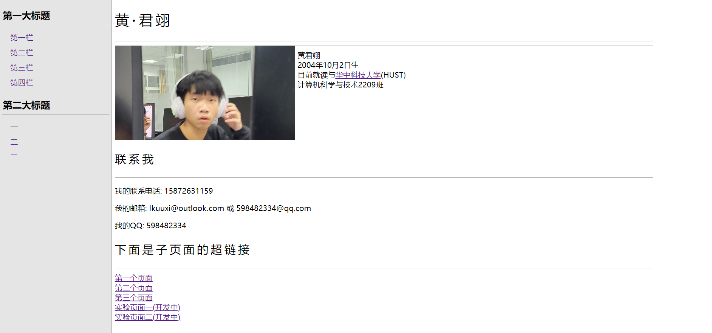

我第一次上讲解网页的课时电脑上没有装Dreamweaver，刚好本人在这个课前一个星期开始学html，所以干脆死敲代码，硬怼html,css和js，虽然最后一个还才学了一点，但是初见成效，所以将这个页面的代码放在这里解释一下。
I-HTML 部分
当前页面
这里有一个实验
本页面最初受到这个页面的启发，才能弄出这样的页面，但是，由于学习时间实在是太短，js还没怎么学会，暂时只能在html页面内编辑正文(main)，没有markdown生成，不过侧边栏已经差不多可以运行，通过设置正文内name和id进行控制，上图。
主页面
这里是主网站，为了贯彻大道至简，大音希声的思想，主页面非常的。。。质朴而且简练，一定是这个原因！
这个网页超级无比的简单，以至于我感觉只用Dreamweaver都可以做出来(我认为这张网页就凭dreamweaver的图形化界面时绝对实现不了的，只能靠敲代码一行一行堆出来)。
推荐使用的编写软件
陈加忠老师在讲授HTML时教的时dw，但是我用的仍是vscode手写代码，开始挺后悔，后来看见其他人做网页那个效率和效果。。。一言难尽，庆幸使用的vscode，最后来还是学了一些关于前端东西，算是多多少少有一点收获。
II-CSS 部分
highlight插件
话不多说先上代码，代码块由highlight.js包生成，我的做法是在这个页面对应的css样式表内import一个"/highlight/styles/github-dark-dimmed.min.css"样式表, 然后结尾引入/highlight/highlight.min.js"(格式化和高亮生成代码)和/highlight/highlightjs-line-numbers.min.js(代码前加行标)就像这样。
#define _CRT_SECURE_NO_WARNINGS
#include <stdio.h>
#include <stdlib.h>
int main(){
printf("Hello World!\n");
return 0;
}
超链接的过渡动画
同样，还有一些地方运用到了css的特殊设计，比如说这个超链接，这个使用了伪类选择器和伪元素，在<a>后加伪元素::after，设置x方向过渡从不可见到拉长，设置动画时间0.5s(当然也可以设置不同的时间，比如可以设置100万年 ?)。上代码。
a {
position: relative;
text-decoration: none;
color: orange;
transition: all 0.5s;
}
a::after {
content: '';
width: 100%;
top: 100%;
height: 1px;
left: 0;
background-color: currentColor;
display: inline-block;
position: absolute;
transform-origin: left;
transform: scaleX(0);
transition: all 0.5s;
}
a:hover {
color: #ff8500;
}
a:hover::after {
transform: scaleX(1);
}
页面加载时的动画
使用@keyframes创建过渡关键帧并在想要产生过渡的元素添加animation的一系列标签，就可以达到背景向下淡入，文字向上出现的效果了。我最初还想让顶栏在页面位于封面时不显示，向下翻动时淡入，后来发现这也要JS，就先算了，侧边栏的效果也一样，暂时还不会干。
.bgdiv {
background-image: url(image/bg.png);
background-position: center -10px;
background-repeat: no-repeat;
background-size: 100%;
top: -10px;
height: 530px;
margin: -26px;
width: 102%;
z-index: 0;
animation-name: bganima;
animation-duration: 0.5s;
}
@keyframes bganima{
0% {
opacity: 0;
height: 400px;
background-position: center -140px;
}
100% {
opacity: 1;
height: 530px;
background-position: center -10px;
}
}
背景部分的过渡。
.main {
position: relative;
left: 10%;
max-width: 65%;
margin-top: 40px;
animation-name: mainanima;
animation-duration: 0.6s;
/* border-right: 1px solid#aaaaaa; */
}
@keyframes mainanima {
0% {
opacity: 0;
transform: translateY(400px);
}
100% {
opacity: 1;
}
}
文字部分的过渡。
III-JS 部分
显示侧边栏
前面已经说过，我不很会JS，等我什么时候会了就再来增加这部分吧，侧边栏暂时先不放了，学业繁忙，头发要紧。。。
急急忙忙竟然把JavaScript学了不少，像模像样敲了个自动生成侧边栏，代码可以优化，而且继续优化，起码现在知道的就是这段代码重复性太高，而且做了不少无用功，以至于前面一段可以直接用querySelector(当时我还不知道)，最后不知道敲的个什么鬼东西。
function getAndSetLabel() {
var label;
var head;
var i;
var tmp, tmp_a;
var subtop;
var topic;
var side = document.getElementById("sidebar");
var area = document.getElementById("main");
for (i = 1; i <= 4; i++) {
head = area.getElementsByTagName('h' + i);
for (let j = 0; j < head.length; j++) {
head[j].setAttribute('name', 'h');
}
}
head = document.getElementsByName('h');
for (i = 0; i < head.length; i++) {
label = 'topic-' + (i + 1);
head[i].setAttribute('id', label);
}
// var test = document.getElementById("text");
for(i = 0; i < head.length; i++){
topic = document.getElementById('topic-'+(i+1));
if(head[i].tagName == 'H3'){
// test.innerHTML += topic.innerHTML;
tmp = document.createElement("li");//创建一个列表元素li。
tmp_a = document.createElement("a");//创建一个超链接元素a等会放到li里面。
side.appendChild(tmp);
tmp.appendChild(tmp_a);//添加到目录下面
tmp.setAttribute('name', 'topic-list');
tmp_a.setAttribute('href', "#"+head[i].id);//设置定位
tmp_a.setAttribute('target', "_self");
tmp_a.innerHTML = ' ' + topic.innerHTML;//填写内容
tmp = document.createElement("ul");
side.appendChild(tmp);
subtop = tmp;
// text.innerHTML = topic.innerHTML;
}
else{
tmp = document.createElement("li");//创建一个列表元素li。
tmp_a = document.createElement("a");//创建一个超链接元素a等会放到li里面。
subtop.appendChild(tmp);
tmp.appendChild(tmp_a);
tmp.setAttribute('name', 'sub-topic-list');
tmp_a.setAttribute('href', "#"+head[i].id);//设置定位.
tmp_a.setAttribute('target', "_self");
tmp_a.innerHTML = ' ' + topic.innerHTML;//填写内容
}
}
};
getAndSetLabel();
显示不完整？等我以后以后以后加一个全屏。。。
一些问题
2022/11/18
理论上还缺少一个监视滚动条的脚本，然后翻页翻到哪时就把侧边栏的那一条给它加黑加粗，但是我懒得搞了，现在看见JS就像吐，以后如果工作绝对不碰前端。
但是侧边栏的跳转有一个很大的问题，就是单纯使用html提供的锚点跳转会导致顶栏遮挡住一部分内容，解决办法是截停url的跳转动作并使用JS进行跳转。万能的CSS竟然还有不能设置的地方，感觉非常地难受，先就这么放着吧，等我什么时候有时间了再去追加这段玩意。
还好这个问题马上得到了解决，就是在js初始化侧边栏的时候给每一个锚点前面加一个暗锚，让其定位向上偏移，而且侧边栏指向那个暗锚，这要就基本解决了。不过非侧边栏的锚点链接这样就要手动调整，就拉倒好了
回到顶部